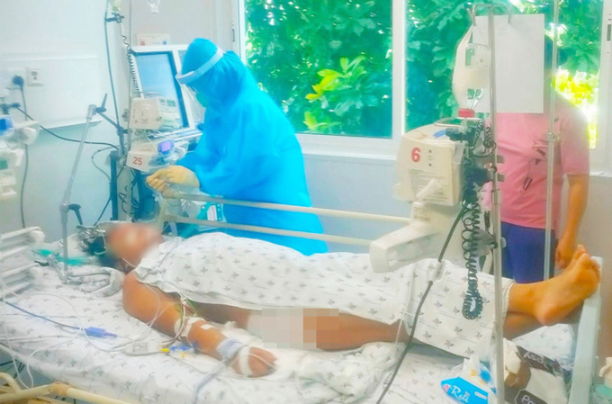

Rất nhiều trẻ nhỏ phải rời gia đình, xa người thân trong sợ hãi, hoảng loạn để đi cách ly, điều trị. Đó là những cảnh tượng đau lòng khi dịch bệnh COVID-19 ào đến lần thứ 4. Và lần này, khốc liệt hơn, khi đến cả những sinh linh bé nhỏ cũng bị COVID-19 nhấn chìm trong vòng xoáy…
Khi những đứa trẻ không còn an toàn nữa
Trong căn nhà nhỏ ở Bắc Ninh, đêm tĩnh lặng đột ngột trở nên náo loạn khi cả hai vợ chồng anh T.B.S (35 tuổi) và chị N.T.H. (31 tuổi) cùng nhận được kết quả dương tính với SARS-CoV-2. Ngay lập tức, họ phải rời nhà để nhập viện điều trị. Chưa bao giờ vợ chồng anh S. lại rối bời đến thế. Họ bàng hoàng khi biết mình nhiễm COVID-19, nhưng điều lo lắng hơn là họ phải để hai con trai là cháu T.T.H. lên 6 tuổi và T.T.A. chỉ mới hai tuổi rưỡi ở lại nhà mà không có ai chăm sóc. Anh chị lên xe đi trong nước mắt, chỉ kịp dặn lại con trai lớn ở nhà trông em, bố mẹ sẽ gọi ông bà ngoại lên ngay. Cậu bé hai tuổi rưỡi khóc khản cả giọng, còn cậu bé 6 tuổi thì hoảng sợ vô cùng.

Đêm ấy, cả khu nhà anh S. không ai ngủ, họ cũng lo lắng, sợ sệt, họ muốn
đến giúp anh chị trông hai đứa trẻ nhưng khi anh chị là F0, 2 con đang là
F1 thì không ai dám lại gần. Cũng ngay đêm ấy, ông bà ngoại tức tốc vượt
quãng đường gần 100 cây số để đến với hai cháu.
3 ngày sau, nhận được kết quả xét nghiệm của hai con, anh S. chết lặng
người khi chúng đều nhiễm COVID-19. Vậy là sau 3 ngày xa cách, cả gia đình
anh lại gặp nhau ở Bệnh viện Bệnh nhiệt đới Trung ương. Trước tình cảnh
đặc biệt ấy, các bác sĩ đã tạo điều kiện cho cả nhà anh S. được điều trị
cùng một khu để chăm sóc cho nhau. May mắn là cả 4 người sau quá trình
điều trị đều đã khỏi bệnh và ra viện. Nhưng thời khắc mà cả nhà phải rời
xa nhau trong đêm tối, ánh mắt hoảng hốt của các con vẫn ám ảnh anh chị và
trở thành một vệt kí ức vô cùng khủng khiếp.
Câu chuyện nhà anh S. chỉ là một trong rất nhiều tình cảnh đáng thương mà
ở đó những đứa trẻ phải đối mặt trực tiếp với nguy hiểm, với những tổn
thương tinh thần trong tâm dịch COVID-19. Vậy là điều mà các bậc cha mẹ lo
lắng nhất đã xảy ra, đó là sự lây lan biến chủng Delta khiến những đứa con
của họ không còn an toàn nữa.
Theo thông tin từ Sở Y tế Hà Nội, số trẻ em mắc COVID-19 tại thủ đô trong
đợt dịch này có dấu hiệu gia tăng đáng kể. Từ ngày 5-7 tới 30-7-2021, có
khoảng 5% tổng số ca mắc COVID-19 ở Hà Nội là trẻ từ 0-5 tuổi. Tỷ lệ này
khá cao so với những đợt dịch trước ở nước ta. Tình hình nhiễm COVID-19 ở
trẻ em còn nghiêm trọng hơn ở TP. Hồ Chí Minh khi tính đến ngày 19-8 có
đến 1.937 trẻ em dưới 16 tuổi mắc COVID-19 đang điều trị tại các bệnh viện
trên địa bàn thành phố.
Từ ngày 7-7 đến giữa tháng 8-2021, Bệnh viện dã chiến số 4 ở xã Vĩnh Lộc
B, huyện Bình Chánh đã tiếp nhận gần 600 trẻ mắc COVID-19.
Tại Bệnh viện Nhi đồng TP. Hồ Chí Minh ngày 13-8 đang điều trị cho 120 trẻ
dương tính với SARS-CoV-2. Nguy hiểm hơn, đợt dịch này ghi nhận nhiều trẻ
nhiễm COVID-19 có triệu chứng nhẹ, trung bình nhưng sau đó tiến triển nặng
rất nhanh, khiến việc điều trị ngày càng khó khăn. Khoa Nhiễm của Bệnh
viện có 6 phòng áp lực âm đều là nơi điều trị cho bệnh nhi mắc COVID-19
diễn biến nặng hiện được sử dụng hết công suất. Có 3 trường hợp bệnh nhi
phải thở máy đặt nội khí quản, một trường hợp bệnh nhi phải thở máy lọc
máu liên tục.
Đặc biệt hơn, Bệnh viện đã xuất hiện một số trẻ có biểu hiện hội chứng
viêm đa hệ thống, cần được theo dõi sát sao và điều trị ở chế độ đặc biệt.
Những con số biết nói trên là hồi chuông báo động để người lớn nâng cao
cảnh giác, tăng cường các biện pháp phòng chống dịch bệnh cho trẻ. Đồng
thời cũng dấy lên nỗi niềm mong ngóng của cha mẹ bấy lâu nay: Khi nào con
em họ được tiêm vaccine ngừa COVID-19?
Thạc sĩ, Bác sĩ Đặng Thị Thúy – Trưởng khoa Nhi, Bệnh viện Bệnh nhiệt đới Trung ương: Trẻ mắc COVID-19 thương lắm…
- Phóng viên:
Hiện tại, tình hình điều trị bệnh nhi mắc COVID-19 tại khoa Nhi - Bệnh
viện Bệnh nhiệt đới Trung ương diễn ra như thế nào, thưa bác sĩ?
- Thạc sĩ, Bác sĩ Đặng Thị Thúy: Số bệnh nhi mắc COVID-19
phải nhập viện điều trị trong đợt dịch thứ 4 so với các đợt dịch trước có
chiều hướng tăng lên. Cho đến thời điểm này, đây là đợt dịch mà chúng tôi
tiếp nhận điều trị nhiều bệnh nhi mắc COVID-19 nhất. Hiện tại có 35 bệnh
nhi mắc COVID-19 đang điều trị tại khoa. Trẻ mắc COVID-19 ở các lứa tuổi
khác nhau, nhỏ nhất là trẻ mới 32 ngày tuổi lây COVID-19 từ mẹ. Đa số các
bé đều dưới 10 tuổi, trong đó lứa tuổi 0-3 tuổi chiếm 1/3 tổng số ca mắc.
- Bệnh nhi mắc COVID-19 thường có những triệu chứng như thế nào, thưa
bác sĩ?
- Nếu như người lớn mắc COVID-19 thường có biểu hiện nổi trội là nhức mỏi
cơ, xương khớp thì ở trẻ em, triệu chứng cơ năng đó ít hơn, nhưng trẻ lại
sốt rất cao, thường ở ngưỡng 39-40 độ C. Đó cũng là đặc điểm phản ứng miễn
dịch của cơ thể trẻ em với tác nhân virus SARS-CoV-2. Ngoài ra, viêm long
đường hô hấp, ho húng hắng cũng là biểu hiện nổi trội mà trẻ hay gặp. Một
số trẻ có triệu chứng tiêu chảy, một số ít khác buồn nôn và nôn trớ. Trẻ
thường chán ăn hoặc bú kém, đặc biệt ở trẻ nhỏ dưới một tuổi.
- Xin cảm ơn bác sĩ!